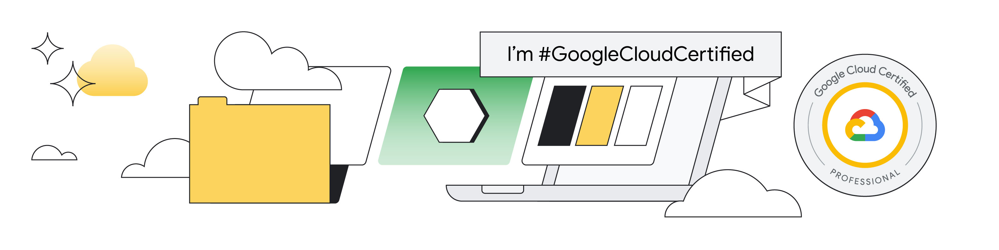
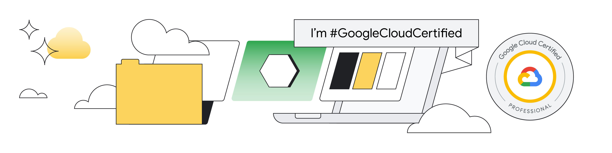

I'm
a Data Scientist specializing in AI and GenAI | MSc in Digital Transformation Management | BSc in Informatics for Management | Certified SCRUM Master
Explorer of the digital unknown, very nerdy. I enjoy working at the intersection of computer science and imagination. I use my creativity to develop AI models that sometimes think, sometimes learn, but mostly create!
Let's talk!
Blog
Discover MoreAbout Me & Curriculum Vitae
Data Scientist specializing in AI and GenAI with a strong background in digital transformation management.
Education
Working Experience
Download complete CV Sofia... who?Some of my personal achievements
 


MasterZ
Blockchains and Digital Assets. A European Blockchain Training Hub founded by AIO Blockchain Lab. It focuses on training young professionals and Generation Z in the field of blockchain technology, Web 3.0, and cryptocurrencies.
MongoDB
Vector Search - Semantic Search & more; the use of Vector Databases in the Generative AI era.
Generative AI
Prompt Engineering - Google Gemini VertexAI
Deposito di brevetto
Patented project solution on February 2025.
Deposito di brevetto
Patented project solution on June 2025.
English Proficency
Certification in EF SET C1 English, indicating advanced proficiency in English language skills.
SCRUM
Certification of completion course on Agile & SCRUM methodology, highlighting skills in managing projects using Agile principles and SCRUM framework.
← Scroll horizontally to see more →
Get in Touch
I don't use personal social media (TikTok, Instagram or Facebook).
You'll find me chatting with people during sports activities or hobbies in my spare time. But let's be honest...
I do have a guilty pleasure for YouTube Shorts 📱, endless 9gag scrolling 😂, and Steam gaming sessions 🎮.
I'm still a GenZ human after all!